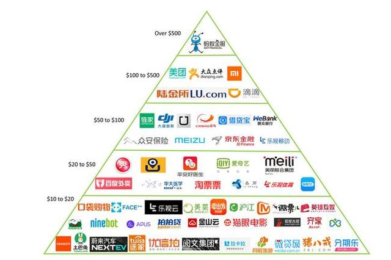

个人资料

- 创建日期：2016年7月7日
- 个性签名：be yourself
2016中国独角兽估值榜：蚂蚁金服、小米、滴滴列前三
近日，艾瑞咨询连续第二年发布了中国独角兽企业估值榜，蚂蚁金服以600亿美元估值蝉联榜首，小米科技、滴滴出行分别以450亿美元和276亿美元估值排名二三位。此次入榜企业门槛为1.6亿美元，入榜的300家企业总估值达4233.8亿美元，平均估值约14.1亿美元，较去年增长了37.8%。榜单中估值达到10亿美元的企业为79家，比2015年增加了31家。

中国独角兽企业估值榜
榜单评选范围为2013年1月至2016年6月期间，曾获得融资，主营业务在中国大陆并在未来筹备独立上市的初创企业；榜单中企业估值通过公开资料及访谈获得，并根据艾瑞估值模型修正得出。
▌互联网金融、电商行业入榜企业最多
从300家入榜企业的行业分布来看，互联网金融依然是资本最活跃的一个行业，共有44家企业入榜，相比2015年增加了4家，占比也提高了1.4个百分点。在榜单TOP10企业中，互联网金融企业更是占据了5家，其中蚂蚁金服以600亿美元的估值排名第一。艾瑞分析认为，虽然P2P理财、网贷平台一直争议不断，但互联网金融的发展趋势依然良好，未来互联网金融将向垂直化、移动化、大数据化等方向发展。
电商行业入榜的企业为36家，在所有行业中排名第二。艾瑞分析认为，随着互联网在中国的高速发展，电子商务已经从新兴行业快速发展至成熟稳定期，并已经有了清晰的商业模式，使这个领域依然是独角兽企业集中度较高的行业；从36家入榜电商企业的细分领域分布看，母婴电商、女性电商、跨境电商等垂直领域发展迅速，同时电商移动化趋势明显；作为电商重要基础服务领域的物流服务行业也有9家企业入榜。
汽车交通和医疗健康也是入榜企业较为集中的行业，分别有23家和21家企业入榜。而作为之前发展趋势火爆的O2O服务行业则在今年遇冷，入榜企业为17家，比2015年减少了7家。艾瑞分析认为，2015年以来，同质化严重、盈利模式不清晰、线下资源匮乏、资金链断裂、用户需求较低等问题，淘汰了许多本地生活服务O2O企业。而资本市场对O2O行业也趋于冷静，以往无休止的砸钱补贴圈用户的模式将得到改变，未来只有真正做到整合多方资源，重视用户体验，能够提供个性化、差异化服务，并有清晰盈利模式的O2O企业才能得到更好更快的发展。